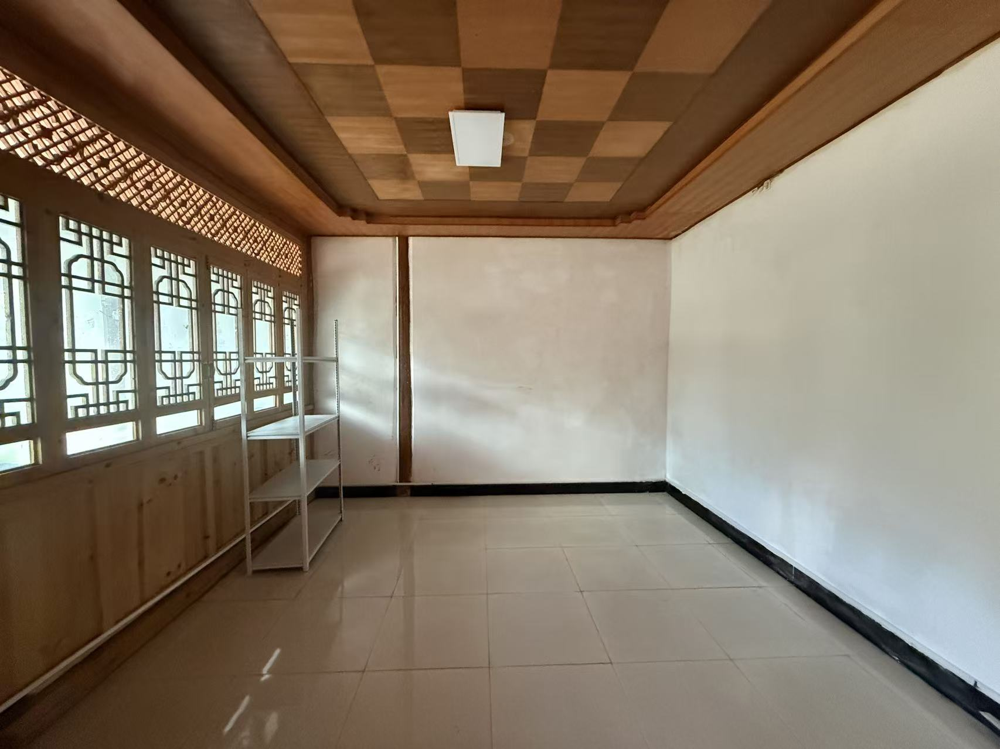
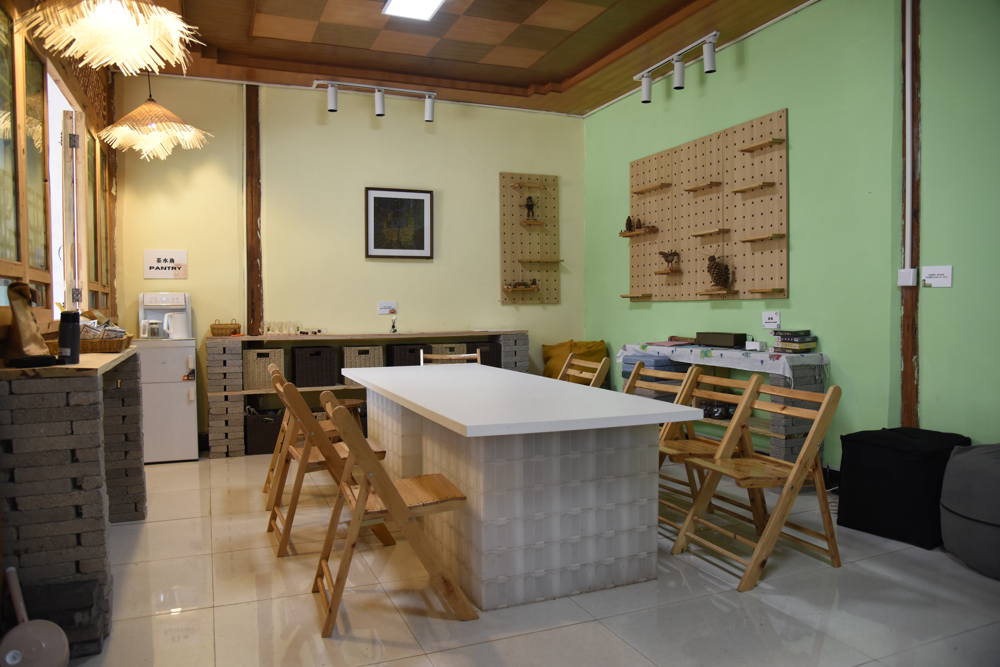
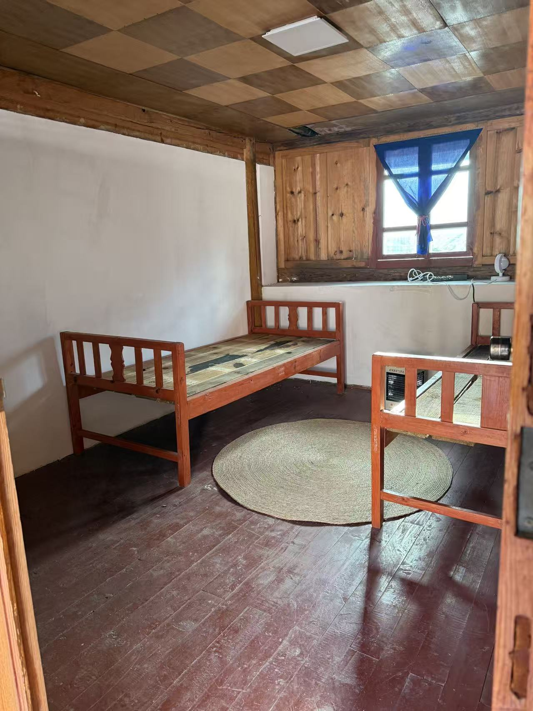
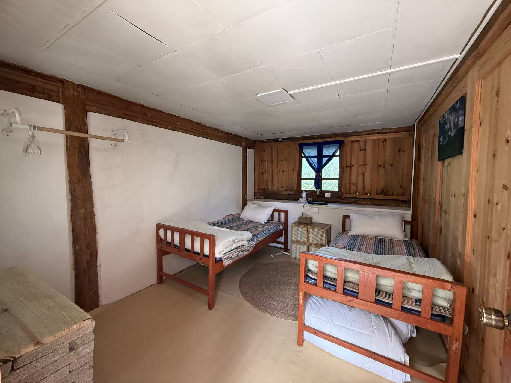
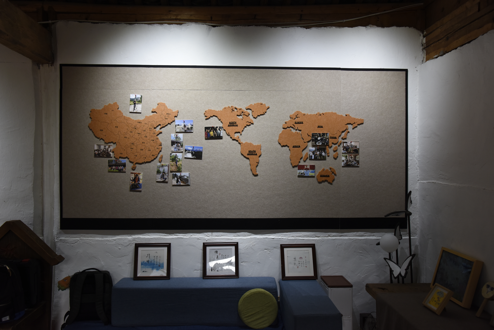
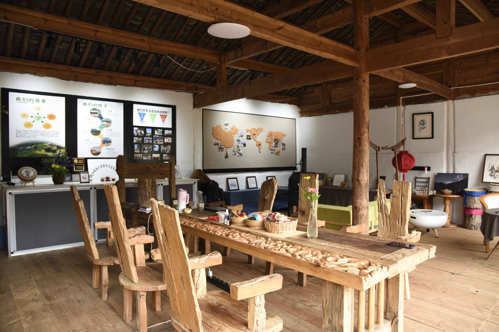
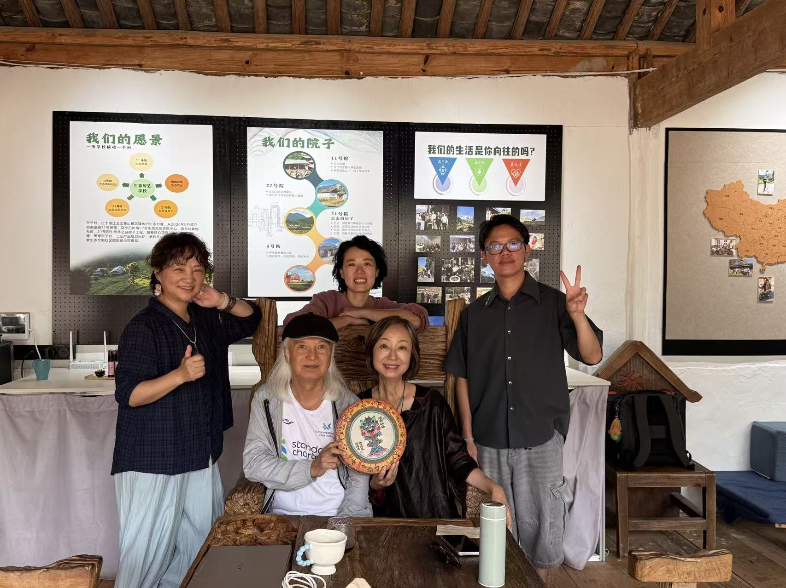
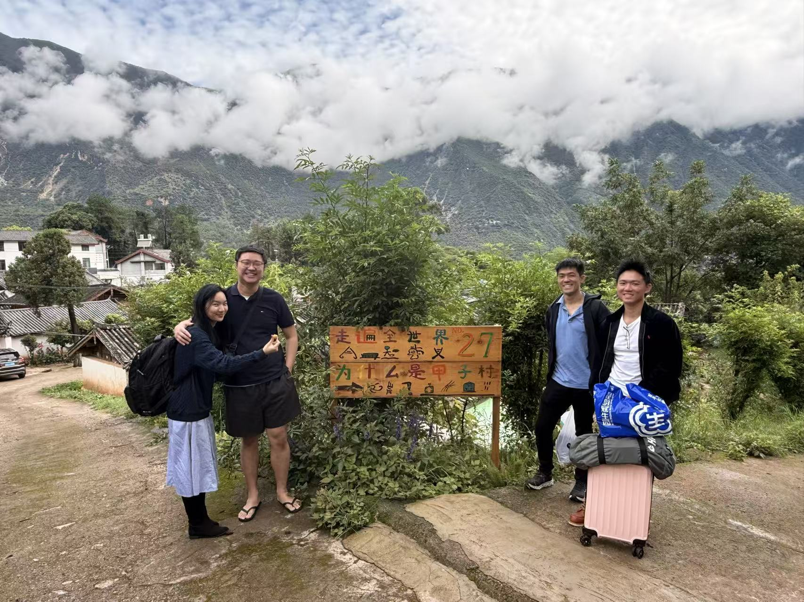
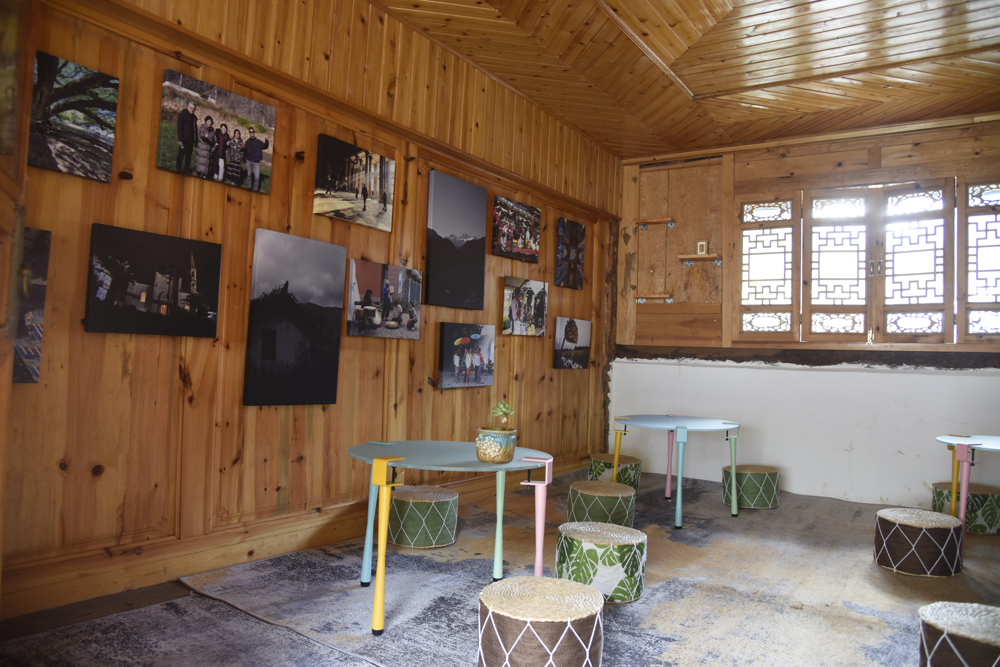
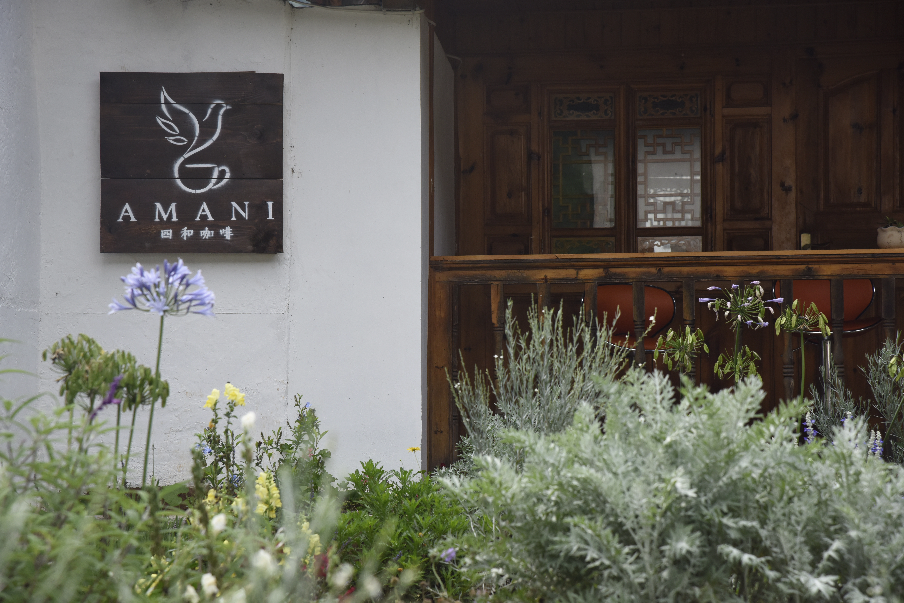

Jiazi Village · Lijiang, China
Building spaces,
systems & community.
A closer look at the physical transformation, visitor experience and community activation behind the Jiazi Village work.
SPACE PLANNINGBUDGET & PROCUREMENTCONTRACTORSOPERATIONSCOMMUNITY ACTIVATION
The gallery is arranged as a visual process: from empty rooms and renovation outcomes to active community spaces, cultural exchange and everyday use. Click any image to open the full-resolution file.











